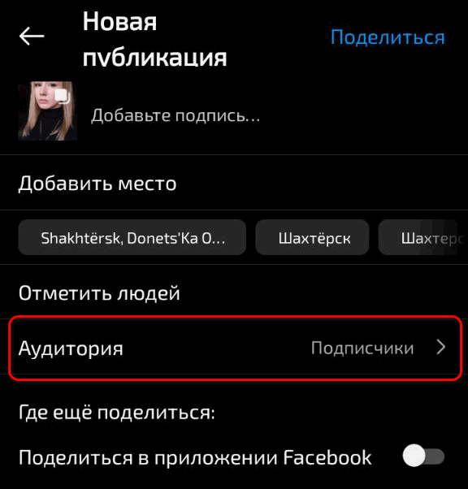
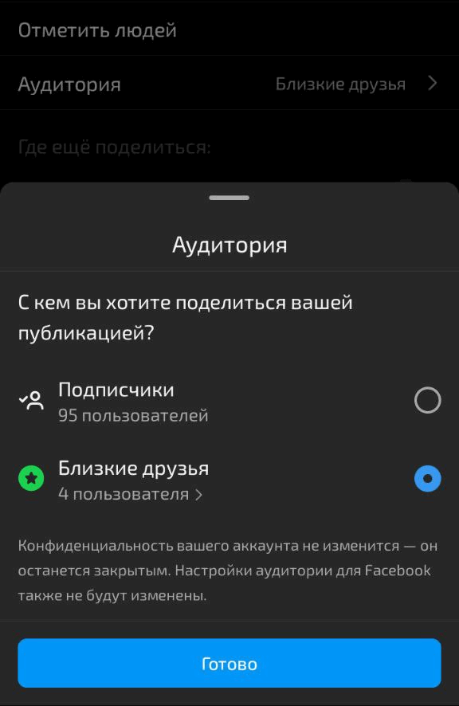
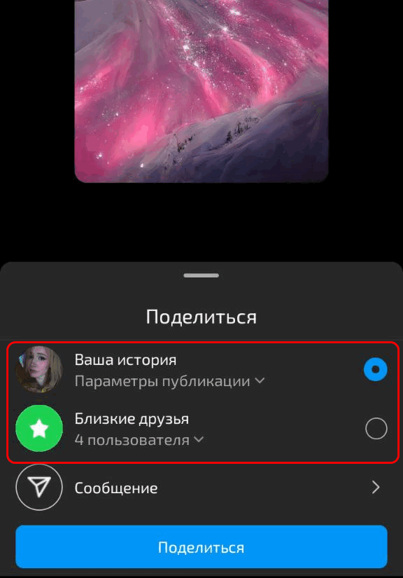

Приватность для постов и Сторис в Инстаграм

Новая функция — настройки приватности для публикаций в Ленте. Автор может указать, какой аудитории будет доступна запись: близкие друзья, подписчики или все посетители страницы.
Приватности страницы в Инстаграме*
В социальной сети есть настройки доступа к контенту, которые делятся по разделам:
- общие. Доступ к публикациям, комментариям и История есть у всех посетителей или только у подписчиков;
- для Историй. Кто может просматривать записи, размещение короткого сюжета на узкую аудиторию;
- для публикаций. Нововведение, которое позволяет делать записи в Ленту только для «Близких друзей» или подписчиков;
- ограничения комментариев. Функция носит название «страницы с ограниченными возможностями»: те аккаунты, которым не будут показаны Истории или не появятся уведомления, запрет на комментирование и реакции.
Инстаграм* разрешает пользователям подробно настраивать доступ к своему контенту: вовсе его скрыть от случайных посетителей, или сделать общедоступным, просматривая статистику и управляя рекламой. но даже такой закрытый аккаунт можно отследить и посмотреть лайки, комментарии или посты.
Владелец может перейти к настройкам конфиденциальности с помощью меню аккаунта и установить статус «Скрытый профиль»: чтобы смотреть записи нужно подписаться и получить подтверждение подписки от обладателя.
Скрыть публикацию от посетителей
С последним обновлением, при размещении публикации, у автора появится дополнительная функция: «Выбрать аудиторию». Она предполагает два варианта: для близких друзей или только для подписчиков. Сделать запись для «Близких друзей»:
- Зайти в Инстаграм* — нажать по кнопке добавления публикации.

- Выбрать фото или видео — завершить редактирование.
- Перейти к заполнению описания — ниже появится функция «Аудитория».

- Выбрать «Близкие друзья» — разместить запись.

Чтобы отредактировать список «друзей» нужно в своем профиле нажать по трем полоскам, в правом верхнем углу, и в меню перейти в одноименный раздел. Там указать, кто из взаимных подписчиков сможет смотреть скрытые публикации.
Скрыть Историю от зрителей
Для временных постов также есть параметры размещения. Если автор делает Сторис на всю аудиторию, то возле его аватарки появится радужная рамка, а если только на «Близких друзей» — зеленая.

Чтобы скрыть Сторис от нежелательных зрителей, достаточно в параметрах размещения выбрать «Список близких друзей». Там же можно отредактировать перечень пользователей с доступом, нажав по самой надписи. Далее появится список, где можно искать по никам или же пролистать весь перечень подписчиков.Список «Близкие друзья»
Этот раздел нужен для того, чтобы выбрать пользователей с особым доступом к контенту. Отредактировать перечень можно двумя способами:
- перейти с помощью соответствующего пункта в меню;
- при размещении Истории.
В этот список добавляют тех, кто взаимно подписан на страницу. На этот перечень можно сделать рассылку в личных сообщениях, запустить трансляцию. Из него можно исключать и добавлять новых. Взаимность для добавлении в список обязательна, как для закрытых страниц, так и для общедоступных.
Запретить просмотр страницы
Полностью запретить просмотр профиля можно тремя способами:
- сделать страницу закрытой. В настройках конфиденциальности указать, что просмотр возможен только после подписки;
- ограничить доступ определенному человеку. Указать, какие действия не будут доступны;
- заблокировать другого человека.
Чтобы скрыть аккаунт:
- Зайти в свой профиль — сверху справа четыре полоски.
- Настройки и конфиденциальность — Кто может просматривать контент.
- Конфиденциальность — Закрытый.
В этом статусе недоступны функции бизнес-аккаунта и профиль Автора. То есть, нет статистики и рекламного продвижения. Владельцу нужно самостоятельно принимать подписчиков, подтверждая их заявки в разделе «Уведомления».